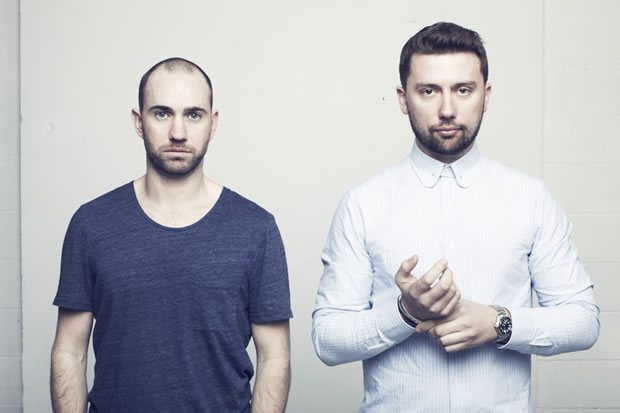

Back To Back: PBR Streetgang
Leeds-based house duo Bonar Bradberry and Tom Thorpe have been working together as PBR Streetgang for coming up to a decade now, cutting their musical teeth on their homecity’s infamous nightlife, and developing into an act that’s equally known for their quality studio output on labels like 20:20 Vision and Futureboogie, as well as their reputation for using the back-to-back setup to maximum dynamic effect in their DJ performances.
However, while their West Yorkshire hometown might have be a defining city for the pair, over the past years it’s fair to say that Ibiza has become somewhat of a second home. More specifically, their residency at the legendary We Love… Space Sunday night parties. Bonar and Tom were lucky enough to have their talents recognised by the night’s organisers early on in the game, and it has since become a defining residency for PBR Streetgang.
The pair have some rather large gigs coming up later this month, not the least which will be an appearances at Fabric London’s 14th Birthday Weekend and We Love Amsterdam Special at Air. However, when Data Transmission spoke to Tom Thorpe, PBR Streetgang were just coming off what was one of their biggest gigs of the summer season. The closing party for We Love… Space took place on the final Sunday night in September, with the duo playing the closing set on the Terrace.
How much time do you spend in Ibiza during the season?
We generally just fly in, and then out again. We’re always trying to be as proactive as possible in the studio during the week, and normally the We Love guys put us up for a couple of nights, Sunday and Monday typically, and then we fly home again. Finding time to be productive in the studio is important to us, though over the summer months with our Ibiza residency and other gigs over the weekend, and other festivals that might be happening, it can be quite difficult. At the moment we’re just trying to get our heads down to make as much music as possible.
You had your Cross Flatts EP out on Newington Records this year, though otherwise you’ve been mostly putting the PBR name to a really solid run of remixes.
Yeah, though we didn’t purposely plan like that. We had several EPs out last year, on Hot Creations and 20:20 Vision plus a few other things. Following that we just got some remix offers in that we thought were very interesting and we really wanted to do, and it’s just kind of fallen that way. Now those have come out, we’re back onto doing some of our own material. And we want to have that kind of consistency with our releases too, we know that we need to have things coming out pretty regularly, and we like working that way too.
You mentioned America. You did do a bit of a tour back in May, how was that?
It was really great, we did five or six cities. We started off in San Fran and then travelled to New York, Miami, San Diego and LA. It was our first tour out there as such and we didn’t know what to expect. The highlight was definitely LA, we played for the Culprit guys on the top of the Standard Hotel Rooftop which was an amazing backdrop for a party, it’s just fantastic and they’re really nice guys. And it was great to travel around the States. We’re going back out in November to do another tour, we’re just finalising the dates at the moment. It looks like there’s going to be South America in there as well. So that side of things is exciting.
Do you think there’s a lot of demand over there for what you guys do?
Yes I think so, there is a demand for all styles of underground music in the US right now, the whole 'EDM' scene (as they label it) has blown up. It’s great to be able to bring fresh sounds to a different audience. We've noticed they tend to like bigger acts over there so the challenge is breaking into the scene and making your mark.
Let’s talk about your residency at We Love… Space. You’re playing the closing party on the last Sunday of September. How many years have you been doing that for now?
This is our sixth year, it’s been quite a while. I can safely say that it’s been a dream come true. We sent a mix CD off to the guys probably around 8 years or so ago. The party is obviously legendary, so we were very happy to get a response. They told us they really liked what we did, and if we were in Ibiza, they were willing to give you a gig in one of the smaller rooms. They took a chance on us many years ago, and we both really respect that.
The organisers really are in it for the right reasons, and really look on things from a proper music perspective, so we’ve kind of started off in the smaller sider rooms playing disco, and it’s been a case of us working our way up through the ‘system’, so to speak. This is the third year we’ve been on the Terrace, but this is the first year we’ve been given the honour of playing the closing sets, and they’ve been amazing.

It’s perhaps becoming less common to see DJs sticking to the one residency in Ibiza.
Yes I think so, it seems to be the way the Island is turning. DJ’s used to tend to stick to one club, one party or one night, but now they’re all branching out and doing multiple nights, parties and clubs, which in a way is saturating yourself. personally and for now anyway we don’t work that way, we’ve happy with how we do things in Ibiza, we play We Love… Space, we come in once a month to play the terrace, put everything into it and leave, we hope over time this creates a demand so people know where you are and want to come check you out, we enjoy working this way.
One of the characteristics about PBR Streetgang is you’re known for making the most of a back-to-back setup when you’re DJing. What’s your setup at the moment?
We use four CDJ 2000s, but what we’ve also got is something called a Q2, which kinda mirrors the queue button, so it enables us to split the mixer in half and listen to music independently from one another. Bonar will be on the mixer, and he’ll be able to listen to the queue points and all the music through that. I then plug in the Q2 and I can listen to the tracks independently of him, which means we can be really creative on the CDJs, which is great. We’ve also got the RMX-1000, which is a really nifty piece of kit that we’ve been using.
With two of us playing at the same time, we can layer things over the top of each other, and we can try to be as creative as possible, rather than just a more simplified back-to-back setup. It just means we’ve got the options there. It’s nice to be able to do that and stand out a little bit.
To offer a contrast, the Apollonia trio formed last year, and they’ve said their approach is to all DJ independently.
We’ve been working together for quite a number of years, the PBR thing has been going for ten years nearly, and even prior to that we knew each other for a few years. We met in a record shop and we were collecting and playing very similar music, which was actually one of the reasons we got together. So straight away we started playing back to back, and we got into that routine really quickly, and that became the norm. What might be quite different to those guys is they’re all individual DJs in their own right, but together they’ve got a formula that works well for them. With us, we’re so used with having that back-to-back method as the way we work, that it has just become the norm. We’ll be DJing together, and then we’re in the studio together three or four days a week, so we literally know each other inside out.
And we just like that way of working. We’ve found it can be more creative for us, we like the excitement of not knowing what the other is going to play. So you can say, ‘oh I didn’t expect that… I know something that can go over the top of this, I know something that could work with that’. It makes it more exciting for us, and I think you can really feel it in the sets that we play.
You recently closed the terrace for We Love at Space on their closing fiesta, how was that?
It really was amazing and a dream come true to me honest, the terrace is a special room stooped in history and heritage, it was a massive honour to close it for We Love. We started at five thirty and finished at around nine with the sunshine blazing through the windows onto the dance floor, it was an unbelievable feeling! The terrace has a particularly sweet place in my heart of rooms to play as it was the first space i visited on my first trip to Ibiza sixteen years ago, i can remember saying to myself back then “one day i will play in here” and it’s happening, wow that feels great! long may it continue.
PBR Streetgang play Fabric’s 14th Birthday and We Loves… Amsterdam Special on Saturday 19th October. For more details and tickets www.fabriclondon.com and We Love… respectively